プレイヤー6体・敵3体。原画コマをそのまま切り替える方式。プレビューは確認用に繰り返します。
走行8原画・縦斬り8原画・蓄力斬撃12原画。待機はv001を維持。原画だけを切り替えて再生します。
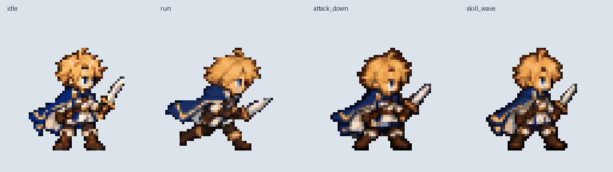
8原画 / 0.67秒
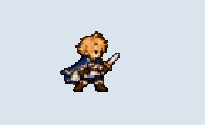
8原画 / 1.00秒
12原画 / 1.75秒
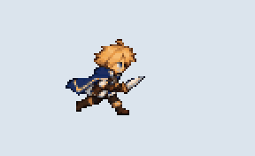
16原画 / 2.50秒
20原画 / 3.25秒
6原画 / 2.00秒
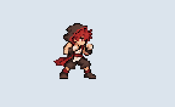
12原画 / 1.25秒
6原画 / 0.50秒
16原画 / 2.00秒
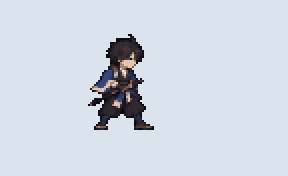
8原画 / 1.50秒
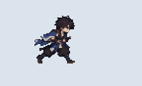
12原画 / 2.00秒
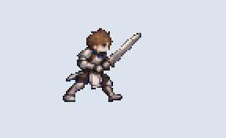
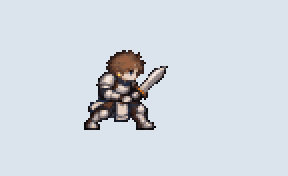
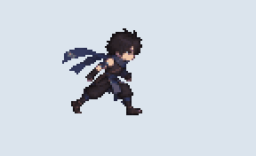
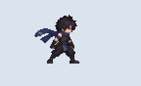
走行8原画・短剣の突き8原画・蓄力クリティカル12原画。右向き128px、原画切り替えで再生します。
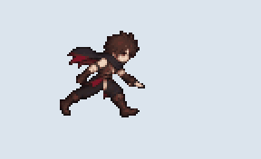
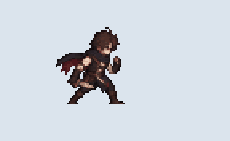
12原画 / 1.92秒
6原画 / 1.00秒
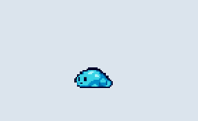
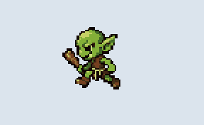
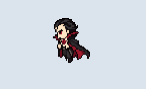
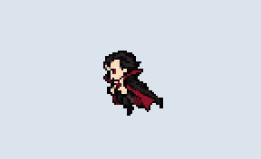